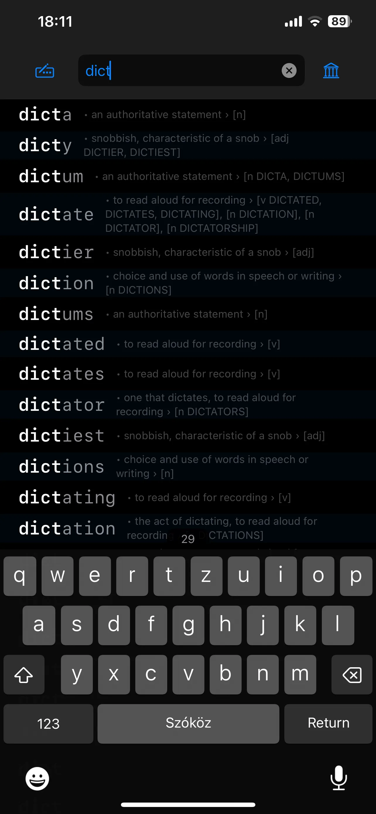
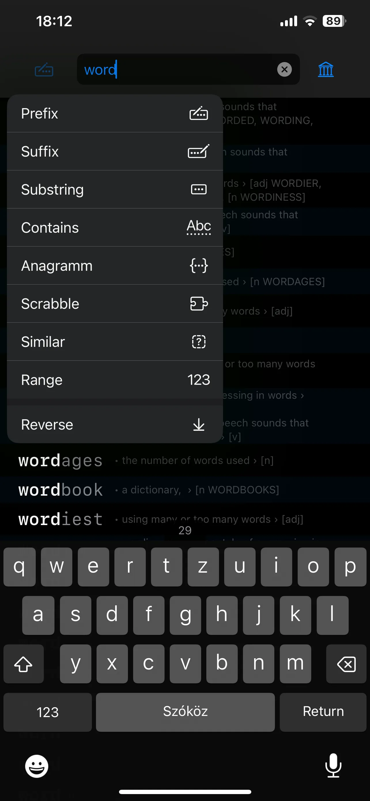
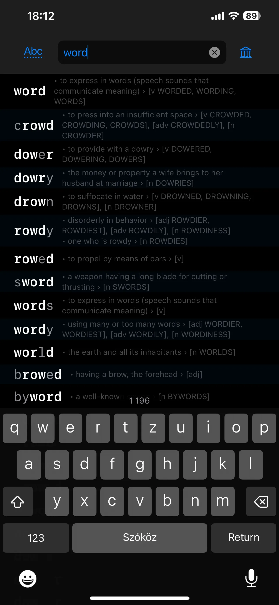
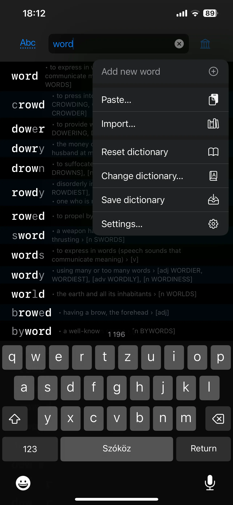

A dictionary that grows with you · In development
Make the words
your own.
A large dictionary is a starting point. Your vocabulary is what you build from it. Verbose connects the words you look up, the texts you read and the practice that helps them become familiar.

Read. Notice. Return. Practise.
Build a vocabulary that belongs to you.
Verbose takes a personal approach to learning words. Instead of treating a dictionary as a finished collection to memorise, it helps you build your own vocabulary, one word at a time.
Give it a text you have been reading, and it identifies words you have not yet marked as known. It keeps track of the words you encounter and how frequently they appear, helping you notice what is new and what keeps coming back.
Those discoveries can become practice material automatically, or you can assemble your own card sets. Return to the words, revisit them in context and keep practising as your personal collection grows.

There is more than one way to find a word
Start with the letters you have.
Know the beginning, remember an ending, or have a handful of letters to rearrange? Search the dictionary in the way that fits your question.
- Beginnings
- Find words by their first letters:
dict… - Endings
- Search by final letters or a suffix:
…tion - Inside a word
- Look for a substring or words containing your chosen letters.
- Anagrams & word games
- Rearrange letters and explore combinations for Scrabble and other word games.
Built for a large vocabulary.
Verbose's binary-tree-based search system is designed to keep lookups fast, even with dictionaries containing millions of entries and on older phones.
A starting library. A personal collection.
Your words, in your language.
Start with an extensive existing vocabulary, search it, and add your own entries by hand. The dictionary can be replaced with another word collection, including one for a different language.
The aim is to keep a useful reference and your own learning material together. Bring in words from your reading, collect unfamiliar terms and build card sets around the subjects that matter to you.


Beyond learning a language
What will you use your words for?
A personal dictionary and flexible letter searches can be useful in many situations. Here are some ways to put the same tools to work.
- Scrabble and letter games
- Explore anagrams and possible letter combinations while practising or playing word games.
- Crossword inspiration
- Use remembered beginnings, endings or letter fragments to narrow down possible answers.
- Exam and course revision
- Build a focused card set from the unfamiliar vocabulary in your reading and course material.
- A professional glossary
- Add specialist terms from your work or studies and collect them in a vocabulary you can revisit.
- Books and reading groups
- Gather new words from a chapter or article, then return to them before your next reading session.
- Travel preparation
- Make a personal card set around the words and situations you want to practise before a trip.
- Writing and wordplay
- Explore anagrams, beginnings and endings for puzzle ideas, titles, character names or creative prompts.
- Word families and spelling
- Compare words with shared prefixes or suffixes, and look up spellings in your chosen dictionary.
Further reading: British Council's vocabulary notebook guide and Merriam-Webster's Scrabble word finder.
Verbose is currently in development. Screenshots show a work in progress.